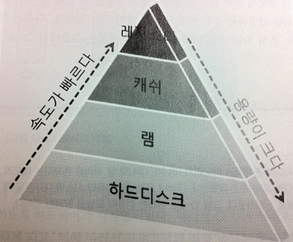
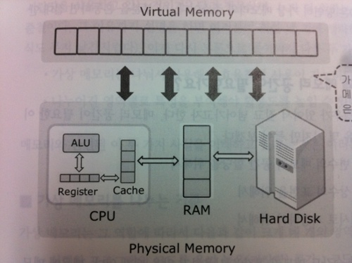

메모리 관리와 메모리의 동적 할당
발표자: 조한영
C언어 메모리 구조
하드웨어 관점에서의 메모리 공간
- 하드디스크(hard disk)
- 램(RAM)
- 캐쉬(cache)
- 레지스터(register)
하드디스크(hard disk)
장점:
컴퓨터의 전원이 나간 상태에서, 저장된 데이터가
지워지지 않는 저장장치
단점:
데이터를 읽고 쓰는데 걸리는 시간이 저장된데이터가
소멸되는 장치해 비해서 길다
[any material that should appear in print but not on the slide]
램(RAM)
특징:
휘발성 메모리이며 하드디스크와 비교해 비교적 빠른 연산
속도를 보임
메인 메모리(mainmemory)
프로그램의 실행속도를 향상 시키며 프로그램 실행
중심이 되는 메모리
[any material that should appear in print but not on the slide]
캐쉬(cahe)
장점:
램과 ALU사이에 존재하며 램보다 빠른 속도로 ALU의 접근이 가능
단점:
가격대 성능비가 비쌈
[any material that should appear in print but not on the slide]
레지스터(register)
특징:
- 산술연산을 포함한 연산의 결과는 레지스터에 저장
- 함수의 반환 값도 레지스터에 저장
별도의 변수에 연산 결과를 저장 하지 않는다면
레지스터에 머물다 소멸
[any material that should appear in print but not on the slide]
(메모리 계층도)

[any material that should appear in print but not on the slide]
가상 메모리(virtual memory)

[any material that should appear in print but not on the slide]
메모리 공간
- 프로그램의 실행과정에서 변수의 메모리 공간 할당
- 프로그램의 실행 과정에서 상수의 표현
- 연산 및 호출된 함수의 반환 값을 임시로 저장
- 프로그램은 가상 메모리 전부를 사용
- 가상메모리는 나눠서 사용해야 효율적인 사용이 가능
- 나누어진 영역별로 특성을 부여해야 활용도가 높음
[any material that should appear in print but not on the slide]
가상 메모리를 나누는 기준
- 코드 영역
실행할 프로그램 코드 (main, 기타함수)
- 데이터 영역
프로그램이 종료될 때까지 유지해야 할 데이터를 저장할 공간(전역 변수, static 변수)
- 힙 영역
프로그래머가 원하는 형태로 쓸 수있는 공간(동적할당)
- 스택 영역
아주 잠깐 사용하고 삭제할 데이터의 저장공간 (일반 변수)
[any material that should appear in print but not on the slide]
힙 영역 (동적할당:dynamic allocation)
힙 영역에 메모리 공간을 할당하는 malloc, calloc, realloc, free
- void *malloc (size_t size);
- void *calloc (size_t elt_count, size_t elt_size);
- void *reallo (void *ptr, size_t size);
- void free(void *ptr);
[any material that should appear in print but not on the slide]
malloc
#include <stdlib.h>
void *malloc (size_t size);
예제코드:
malloc-code
[any material that should appear in print but not on the slide]
calloc
#include <stdlib.h>
void *calloc (size_t elt_count, size_t elt_size);
예제코드:
calloc-code
[any material that should appear in print but not on the slide]
realloc
#include <stdlib.h>
void *realloc (void *ptr, size_t size);
예제코드:
realloc-code
[any material that should appear in print but not on the slide]
free
free는.........
다음 예제에..
[any material that should appear in print but not on the slide]